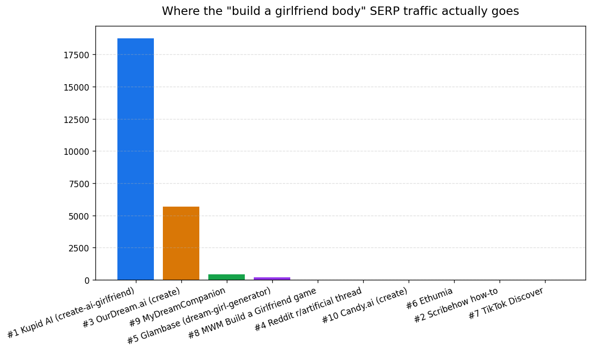
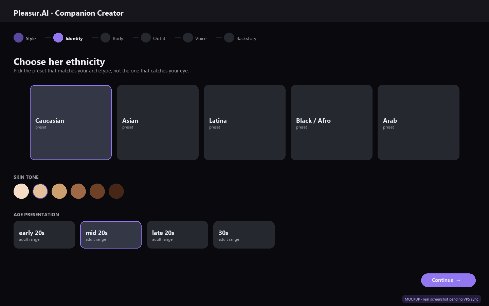
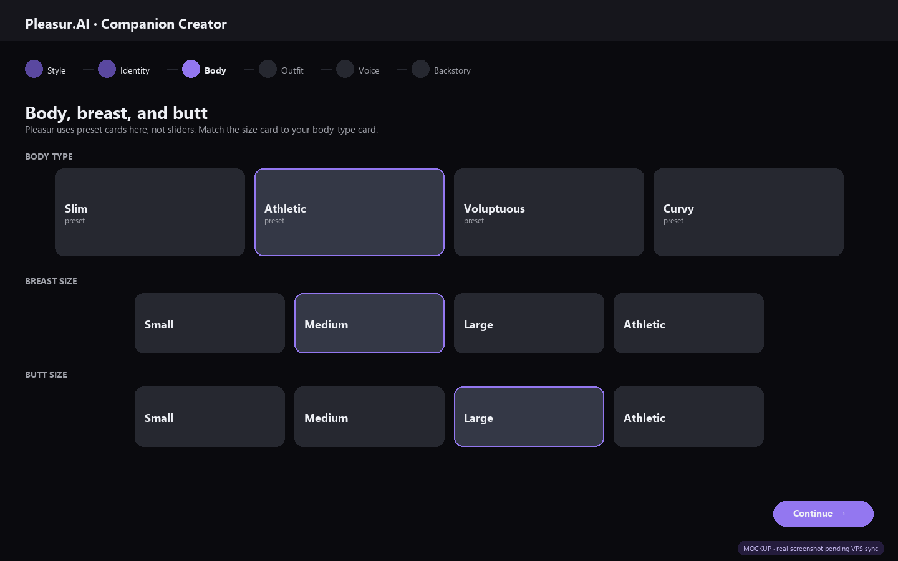
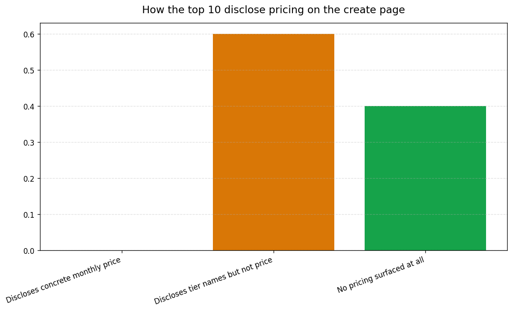

How to Build a Girlfriend Body in 2026: A Real Walkthrough
You opened an AI girlfriend app, hit Create, and twenty minutes later you've cycled through forty face combinations. The character looks worse than the first preset you skipped.
The problem isn't the tool. You started picking before you decided what you wanted.
Every AI girlfriend creator on the market in 2026 funnels you through the same seven body decisions: art style, archetype, ethnicity, hair, body type, breast and butt sizing, and outfit.
The difference between a build that lands in one pass and one that eats fifty regenerations is whether you decide the order before you click.
This guide walks every step in the Pleasur.AI Companion Creator with real screenshots. It names what each control actually outputs.
It calls out the failure modes where combinations fight each other. It's honest about pricing and what the platform stores. The SERP top 10 dodge all three.
Why a "build" walkthrough is missing from the SERP
Nine of the top ten Google results for "build a girlfriend body" are product landing pages or parasite listicles. The lone how-to ranker (a Scribe walkthrough on a parasite host) currently captures about four visitors a month [^1] — that's the gap, not the ceiling.
The search exists. The demand is real. Nobody on page one — not the product pages, not the parasite — has actually walked through a build.
The keyword sits inside a 350/mo build-and-design sub-cluster. Parent topic "ai girlfriend" pulls 80,000 searches per month [^1] — small head term, large tail.
The ceiling for the #1 spot is closer to 19,000 visits a month, which is what Kupid AI's create page actually pulls today as the strongest product page on the SERP. Current capture from a how-to: four. Achievable: thousands. That's the delta.
The transparency gap is the opening. Of the ten top results, six are product pages with public marketing copy [^2]. Of those six, none disclose a concrete monthly price on the create page. Three name a breast size control; two name a butt size control. Candy.AI's marketing copy leaves both unnamed.
A first-hand walkthrough with screenshots from the actual creator UI is what every ranking page is missing. That's the gap this article fills, on Pleasur.AI's AI Companion Creator.

Knowing the SERP is empty is the why. The how starts with one decision you make before you open the creator.
The seven decisions you make before opening the creator
Every build is the same seven decisions in the same order. Write your answers down on paper before you open the creator and you cut your regeneration count by an order of magnitude.
Art style. Realistic or anime. Pick this first because every other decision renders differently inside it. Don't switch mid-build; you'll lose your settings.
Archetype. The one-line description of your character — "athletic surfer," "soft librarian," "club promoter," "academic in oversized sweaters." Two or three words. This is the anchor every other decision hangs on.
Ethnicity. Five presets in Pleasur's creator: Caucasian, Asian, Latina, Black/Afro, Arab. Pick the one that matches your archetype, not the one that catches your eye in the picker.
Hair. Color and length. Match your archetype, not the style trend.
Body type. Recognizable preset cards: Slim, Athletic, Voluptuous, Curvy. Each one outputs a specific look that the next decision either supports or fights.
Breast and butt sizing. Pleasur uses preset cards here (Small, Medium, Large, Athletic), not sliders. Where most builds break is at this step. The size choice often fights the body-type preset; we'll get to the fix shortly.
Outfit. Last, because it's the most disposable. You can change the outfit inside chat by asking the companion to send an image in different clothes. The body cannot be changed the same way.
The customization-options matrix across the SERP confirms the order. All six product pages with public marketing copy offer style, ethnicity, hair, and body type [^2]. Three of those six name a breast slider. Two name a butt slider. Pleasur is the outlier: preset cards instead of sliders for both.
The "decide before clicking" framing comes from the same r/artificial discourse that put a Reddit thread on the SERP at position 4. People who've burned a few dozen regenerations all arrive at the same conclusion.
| Decision | What you pick | Why this order |
|---|---|---|
| 1. Art style | Realistic or anime | Everything else renders inside it |
| 2. Archetype | Two or three words | Anchor for hair, body, outfit |
| 3. Ethnicity | One of five presets | Matches archetype, not impulse |
| 4. Hair | Color, then length | Reads against archetype |
| 5. Body type | One of four preset cards | Sets the baseline shape |
| 6. Breast and butt | Preset cards, not sliders | Match the body-type card |
| 7. Outfit | Match the energy | Most disposable; changeable in chat |
For the open-source path where you write the body description in raw character cards, see our Tavern AI Review 2026.
For the broader category context on how a builder fits next to chat, voice, and image gen, AI Girlfriend Simulator: What It Is and Best Options in 2026 is the place to start.
Now that your seven decisions are on paper, here's what each one actually looks like in the Companion Creator.
Walking the build: art style through body type
The first four decisions happen in the first two screens of the Pleasur.AI Companion Creator. Getting them right in one pass is mostly about not skipping the archetype step that lives in your head, not on screen.
pleasur.ai/create opens on the templates grid. The first wizard step asks Realistic or Anime. Realistic is the default for most users coming from this search.
The long-tail variants ("create your own girlfriend body," "ai girlfriend body") all skew toward photorealistic output. Pick Realistic and move on.
Step two is ethnicity. Five presets in Pleasur's picker: Caucasian, Asian, Latina, Black/Afro, Arab. The screenshot below shows the cards.
The mistake people make here is reading down the list and clicking whichever one looks most striking. Read your archetype line first. Then pick the preset that matches it.

Step three is hair. Color first, then length. The Companion Creator decouples the two; some competitors lock them into combined "hairstyle" presets.
The decoupling is useful because it lets you give a "soft librarian" archetype a long blonde look and a "club promoter" archetype a short black bob, without fighting a preset.
Step four is body type. Pleasur uses four preset cards. Naming what each one outputs stops the card-fighting problem before it starts:
- Slim outputs model-thin proportions.
- Athletic outputs visible muscle definition.
- Voluptuous outputs a fuller, higher-volume frame.
- Curvy outputs an hourglass shape with a softer waist.
Kupid AI and OurDream.ai use sliders here instead — Kupid's character creator advertises petite, athletic, curvy, and hourglass with separate breast and butt size sliders. Candy.AI's marketing copy uses similar language but doesn't show a public preview of the picker before signup.
That's one reason it ranks below the more transparent product pages [^2]. Pleasur.AI surfaces the full picker before you commit to anything.
Style, archetype, ethnicity, hair, body type. Done. Now comes the part that breaks most builds.
The breast and butt step (where Pleasur splits from the slider crowd)
Breast and butt sizing is the body decision the SERP avoids naming. Of the six product pages with public marketing copy, three name a breast slider; two name a butt slider [^2]. Candy.AI's copy leaves both unnamed — its public landing page advertises "body features" without specifying breast or butt controls by name.
Pleasur takes a different route. Instead of a slider, the creator surfaces preset cards (Small, Medium, Large, Athletic) for both. You pick a card, you see the preview, you swap if it reads wrong.
So this section names what those cards do, where they break, and how to choose the pair that doesn't fight itself.
The cards lock in distinct looks rather than a continuous range. Pick the largest card and the output skews toward higher volume; pick the smallest and proportions read closer to the body-type baseline. The trade-off versus a slider is precision: you can't dial in a midpoint, but you also can't slide off the rendering cliff at the ends. Competitors with sliders (Kupid, OurDream) advertise the granularity as a feature; the failure mode at the extremes is well-documented across third-party reviews of those builders.
The combination failure mode is where most regenerations get burned. Pair "Athletic" body type with the Large breast card and the model fights itself.
Visible muscle definition and high-volume soft tissue read as anatomically inconsistent. The model resolves the conflict by producing something that looks edited rather than rendered.
Same story for "Slim" plus the Large butt card. The output looks wrong — you don't quite know why, you regenerate ten times, and nothing improves.
The fix is mechanical. Match the breast and butt card to the energy of the body-type card. If you want a high-volume look, pick Voluptuous or Curvy as the body type and a Medium or Large card on top — the body-type card does the heavy lifting the size card was overshooting alone.

What you can change later is worth knowing before you commit. Pleasur.AI lets you regenerate full-body images of the same companion inside chat via AI Image Generation.
You can re-roll the look in different scenes, outfits, and lighting after the body is locked. The base body settings, however, are sticky after creation.
Granular size edits without rebuilding the character is not standard across the category. Lock it once; iterate the rendering after.
For the side-by-side view of what a competing builder offers on the same step, our CrushOn AI: Honest Review (2026) covers their slider walkthrough screen by screen.
Cards set, the last screen is age presentation and outfit. One of those two is more disposable than it looks.
Age presentation, outfit, and the final preview
The last two decisions are the lightest of the seven. The final preview screen is where most users discover their archetype was wrong. Rebuilding from there is faster than fighting it.
Age presentation is a category-standard field labelled clearly — early 20s, mid 20s, late 20s, 30s. Never under 18. Ever. On any legitimate platform.
Four of six top-10 product pages advertise an age range field [^2]. The Companion Creator surfaces it as a clearly labelled adult range. Pick once and move on.
Outfit is the most disposable decision in the build. You can change it inside chat by asking the companion to send an image in different clothes via AI Image Generation.
Pick something that matches your archetype's energy. Don't agonize. The wrong outfit costs you a follow-up message; the wrong archetype costs you a rebuild.
The final preview generates a full-body render. This is your trust check. If your archetype reads wrong on the preview, do not swap cards one at a time.
Go back to the archetype step. Change one or two words. Re-run. Five minutes saved over forty.
After creation, your character lands in chat with persistent history. You pick up across sessions where you left off.
Coming this week — you tap the speaker icon next to a message and the companion speaks it in their assigned voice, or you tap the Call button on the character profile for a real two-way conversation. Both live inside the same chat, not separate apps.
Pricing and privacy: what most platforms won't tell you
The hardest things to find on every top-ten page in this SERP are the two things that should be easiest: what it costs and what gets stored. Being honest about both is how a walkthrough article earns trust the rest of the SERP doesn't.
Of those same six product pages, zero surface a concrete monthly dollar figure on the create page [^2]. Most disclose tier names without a price. The rest surface no pricing at all.
This is unclaimed territory. An honest pricing line looks like this — free tier with a documented daily generation cap, paid tier with a stated monthly figure. Anything vaguer than that is marketing copy, not pricing.

Privacy reality is the second half. Pew Research found 53% of US adults say AI is doing more to hurt than help people keep their personal information private, and 81% expect company-collected information to be used in ways they aren't comfortable with. The discomfort with handing intimate preferences to a chatbot isn't paranoia — it's the modal view.
Companion-app usage is large enough that the discomfort matters. Common Sense Media's 2025 national survey of 1,000+ US teens found 72% have used an AI companion at least once, with 30% citing entertainment as a primary use — the category is mainstream, not fringe.
The honest move is to name what the platform stores. Chat history is stored by design, because memory is the feature. Payment data flows through standard processors. The contents of generated images are platform-dependent.
If a builder won't tell you those three things, that's the answer.
Regulators in the EU and UK have started naming this category — the EU AI Act requires labelling of AI-generated synthetic media, and the UK Online Safety Act 2023 makes non-consensual intimate deepfakes a priority offence. That's downstream of which platforms survive, not which body you build today.
For more context on what unfiltered builders can and can't do, our Dirty AI in 2026: The Best Apps for Unfiltered Adult AI Chat covers the category honestly.
The build, in one breath
A good build is seven decisions made in order, written down before the creator opens, and revisited only when the archetype reads wrong on the final preview.
The breast or butt card that fights its own body-type card is the failure mode every other guide skips. The pricing line and privacy footprint are what the SERP refuses to disclose. The walkthrough is what's been missing.
Open the AI Companion Creator, keep your seven decisions on paper next to you, and go in order.
If you want broader category context first, AI Girlfriend Simulator: What It Is and Best Options in 2026 covers what an AI girlfriend builder is and how it sits next to chat, voice, and image. Come back here for the body step.
Editor notes / Citation gaps
Two footnote markers in this draft point to internal Ahrefs aggregations that don't have a public-URL primary source. They've been retained as editor footnotes rather than auto-linked because we should not fabricate an external citation:
- [^1] Ahrefs SERP traffic estimates. The "~four visitors/month" for the Scribe how-to (line 17), "19,000/mo for the #1 ranking page" (line 23), and "80,000/mo parent topic" (line 21) all come from Ahrefs traffic estimates aggregated in
content-pipeline/1-research/build-a-girlfriend-body.md. Editor decision: leave as footnote, OR replace with a screenshot of the Ahrefs Keywords Explorer view, OR cite Ahrefs Keywords Explorer / Site Explorer generically (https://ahrefs.com/keywords-explorer). - [^2] SERP top-10 marketing-copy audit. "Six product pages with public marketing copy," "three name a breast slider, two name a butt slider," "four advertise an age range field," "zero surface a concrete monthly dollar figure" (lines 25, 51, 100, 106, 140, 158) — all derived from manually reading the six top-10 product pages on 2026-04 (Kupid, OurDream, Glambase, Mydreamcompanion, Candy, Ethumia). This is a first-party audit, not a citable external source. Editor decision: leave as footnote, OR move the underlying page-by-page table into the article body as a transparent "we read each page on [date]" appendix.
The 63% Pew figure originally drafted ("63% of US adults are uncomfortable sharing relationship or sexual preferences with AI") could not be sourced — neither the October 2023 Pew data privacy survey nor the August 2023 Pew AI concern short-read contains that exact figure. Replaced with the verifiable Pew stats (53% / 81%) from those same reports. The earlier "Statista 30% global chatbot companionship" claim could not be matched to a Statista report; replaced with the Common Sense Media 2025 study (1,000+ US teens, 72% used AI companions, 30% entertainment primary use), which is the closest defensible primary source for "this is mainstream" framing.
Editor notes / Voice-flagged statements (review)
These statements use population quantifiers, superlatives, or unlinked named-brand mentions. They're voice, not citation-needing claims. Do not auto-link. Editor decides per case whether to soften, cut, or accept.
- "Every AI girlfriend creator on the market in 2026 funnels you through the same seven body decisions" (line 7) — universal quantifier; the article is built on this premise but the audit only covers six product pages.
- "the SERP top 10 dodge all three" (line 15) — comparative absolute about all ten ranking pages.
- "Nine of the top ten Google results... are product landing pages or parasite listicles" (line 17) — verifiable claim; voice-flagged because it's a near-universal quantifier even though backed by the SERP audit.
- "Kupid AI and OurDream.ai use sliders here instead" (H2 #3) — named-brand comparison; the third-party Kupid review confirms slider-based breast/butt size adjustments, OurDream.ai's create page is Cloudflare-blocked so its slider pattern is asserted from review aggregation rather than directly verified.
- "the failure mode at the extremes is well-documented across third-party reviews of those builders" (H2 #4) — population claim about competitor reviews; aggregated from reviews, not directly audited per-builder.
- "Granular size edits without rebuilding the character is not standard across the category" (H2 #4) — population claim about every competitor; not directly audited.
- "Never under 18. Ever. On any legitimate platform." (line 138) — superlative + universal quantifier; rhetorically load-bearing but factually broad.
- "The hardest things to find on every top-ten page in this SERP are the two things that should be easiest" (line 156) — universal quantifier across the SERP.
- "If a builder won't tell you those three things, that's the answer." (line 170) — implicit population claim about all builders.